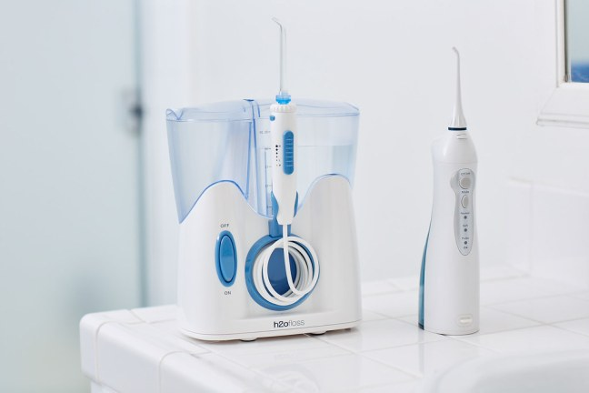
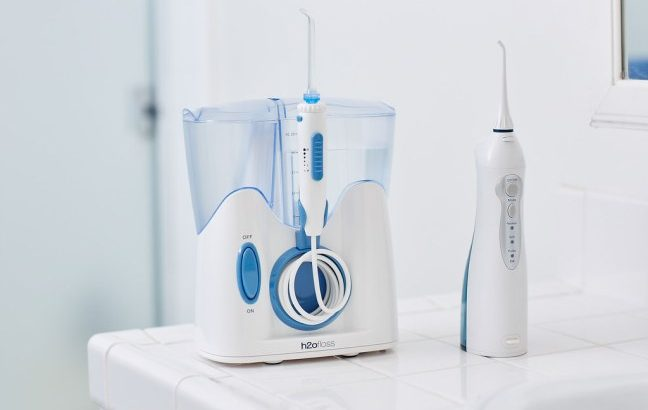

Water Flosser Market to Spike in Sales

Water flosser unit sales exceeded nearly 31 million in 2018 and are likely to see a robust 7% increase in 2019.According to a new market research report of Future Market Insights (FMI), household end use accounts for approximately 60% of the overall water flosser demand.The demand from commercial sector is highly likely to surge in coming years.
Approximately a third of global sales are brought about by drug stores and pharmacies, followed by hypermarkets or supermarkets.In the light of flourishing E-commerce space, online retailers are firming up their foothold in the sales of specialty healthcare products, such as water flosser.Portable and cordless water flosser, accounting for nearly 3/5th of total sales, has been highly preferred over the years.Over the forthcoming years, FMI’s report anticipates that the popularity of countertop water flosser will take over that of portable and cordless variant – pushing the rate of adoption further.
Request Sample Report
Premium Range of Water Flossers to Penetrate Rapidly
According to the report, while nearly 60% of consumers prefer water flossers available at mid-range prices, a sizable consumer population still adhere to the economy range.However, FMI’s analysis concludes that the premium product range has been swiftly capturing an expanding market in the water flosser industry.With a considerably growing consumer inclination toward high-quality specialty healthcare products despite their expensive price point, it is highly likely that the premium priced range of water flossers will witness significant gains in the near future.
In addition to the continued prevalence of periodontal diseases, the rapid technological advances invading the dental care industry is playing a significantly important role in strengthening demand for water flossers.Although in its infancy, the water flosser market is projected to experience a notable spike in sales over the coming years.Consistently improving rate of usage in households, water flosser demand will reportedly surge owing to rapid increase in adoption by travelers.
[cpm10]
Developed Regions Remain at the Forefront of Adoption
The report further highlights that the limited use of specialty oral care products such as water flossers and the continued reluctance of consumers toward the usage of personal water flossers will remain the key challenges restraining the growth of market in developing regions.On the flip side, developed regions have been high-growth markets for water flosser manufacturers over the years and will account for a collective revenue share of over 65% in the global market.
Ask an Analyst
FMI’s report on the global water flosser market covers strategic profiles of some of the most prominent companies competing in the market, which include Panasonic Corporation, h2ofloss limited, Jetpik, Shenzhen Relish Technology Co., Ltd., Aquapick, ToiletTree Products, Waterpik, Oratec Corp, Koninklijke Philips N.V, The Proctor Gamble Company, Ginsey Home Solutions, Hydro Floss, Candeon Technologies Co.Ltd., Gurin Products LLC, Inc., and S.C.Johnson Son Inc.
A majority of the water flosser manufacturers are focused on new launches.Waterpik®, in the year 2018, announced the launch of the new whitening water flosser that has easy and effective interdental cleaning features intended toward healthy teeth and gums.The company also claimed this flosser’s ability of teeth whitening within a 14-day period.Recently, Waterpik® reportedly recalled the same product due to some possible health risks, as shown clinically.
[bsa_pro_ad_space id=4]
Share on Facebook Tweet Follow us
Posted On: 2019-07-02T00:00:00
Posted By: Ankush Nikam



Content Date: 2019-07-02
Download Date: 2021-07-09
Document ID: L0C04E3RH